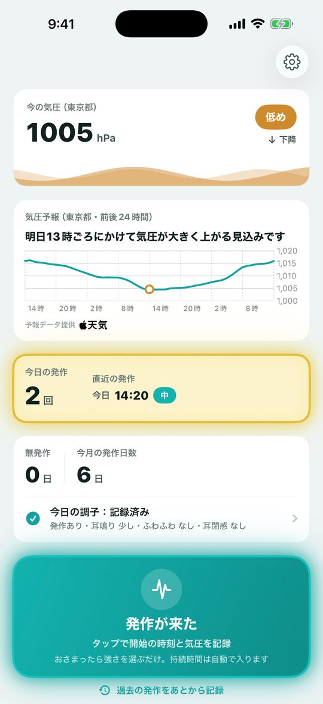
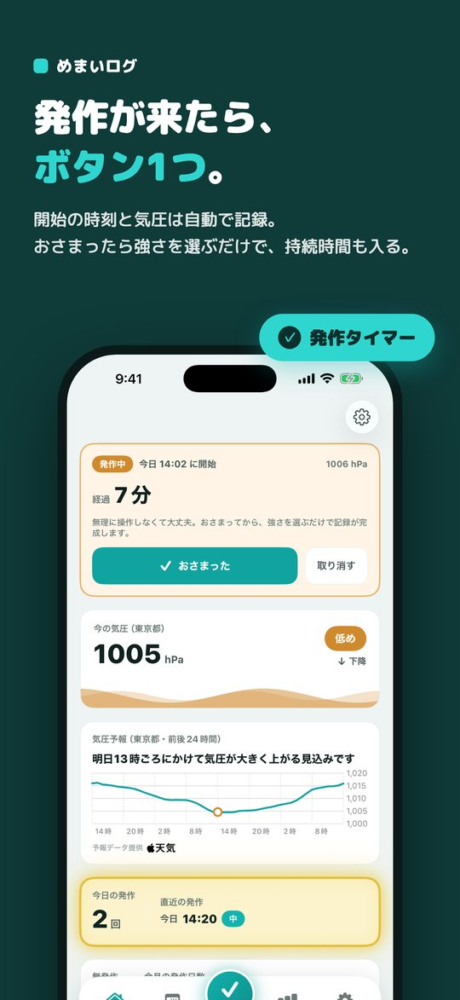
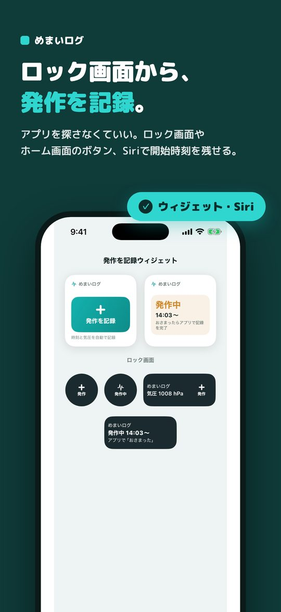
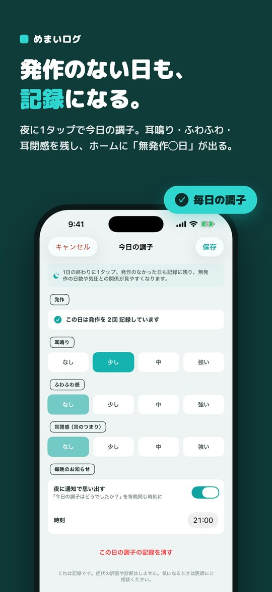
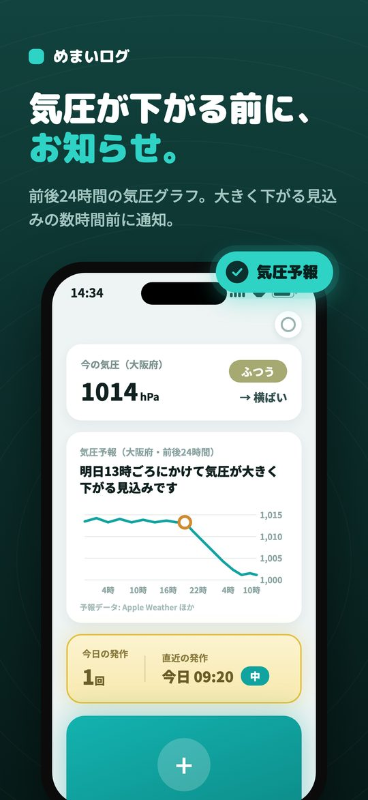
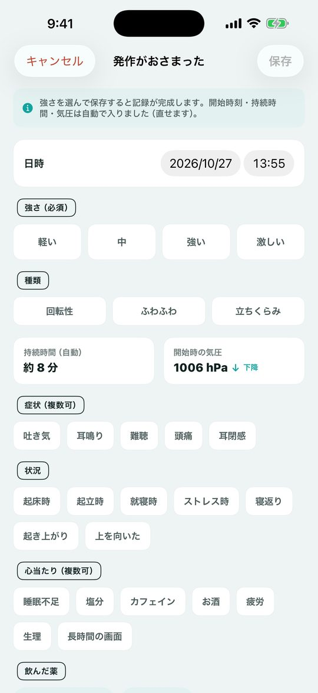
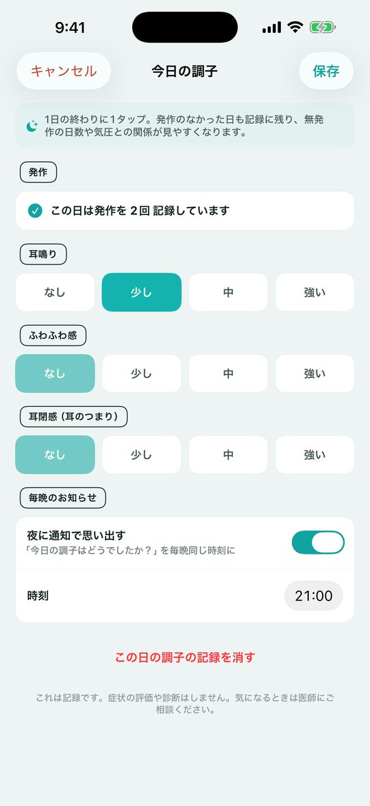
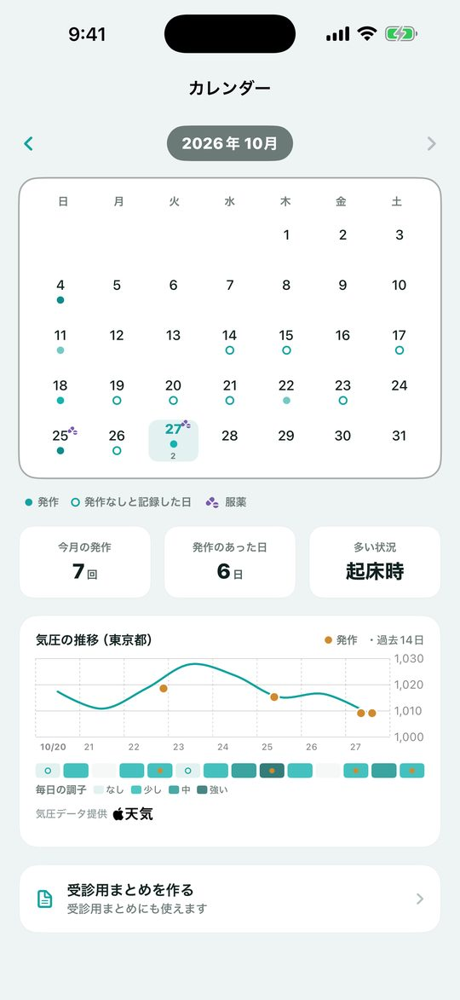
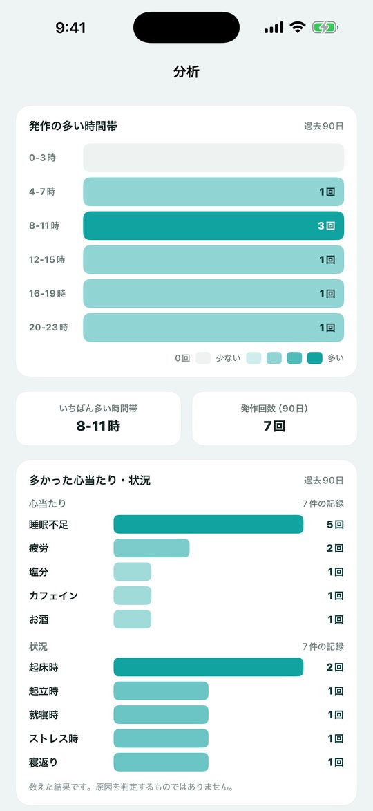
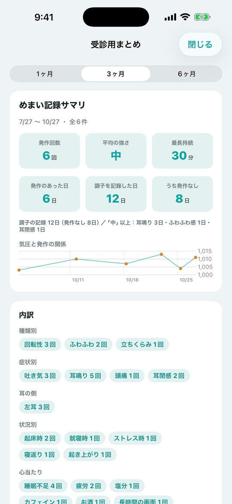

発作が来たらワンタップ・天気痛対策と通院メモに
月額なし・広告なし。発作が来たらボタン1つで開始を記録、おさまったら強さを選ぶだけ。ロック画面のウィジェットやSiriからも。毎日の調子と気圧を重ねて振り返り、受診のときに医師へそのまま見せられる記録アプリです。診断はしません。
App Store からダウンロード無料でダウンロード。追加機能は買い切り（¥900）で解放できます。

発作が来たらボタンをタップ。開始時刻と気圧が自動で記録され、ホームに「発作中」と経過が出ます。おさまったら「おさまった」を押して強さ（軽い／中／強い／激しい）を選ぶだけ。持続時間は自動で入ります。過去の発作をあとから記録することもできます。
「発作を記録」ウィジェットをロック画面やホーム画面に置けば、ボタン1つで開始時刻を記録。Siriやアクションボタンで「めまいログで発作を記録」も使えます。
種類（回転性・ふわふわ・立ちくらみ）、持続時間、症状（吐き気・耳鳴り・難聴・頭痛・耳閉感）と左右どちらの耳か、状況（起床時・起立時・就寝時・ストレス時・寝返り・起き上がり・上を向いた）、心当たり（睡眠不足・塩分・カフェイン・お酒・疲労・生理・長時間の画面）、メモを追記できます。
発作の有無と、耳鳴り・ふわふわ感・耳閉感の程度を4段階で記録。発作のなかった日も記録に残るので、ホームに「無発作◯日」と今月の発作日数が出ます。夜に通知で思い出すこともできます（初期設定はオフ）。
発作の記録に、飲んだ薬と時刻を付けられます。薬の名前はご自身で登録（薬のデータベースは入っていません）。薬を飲んだ日はカレンダーに印がつきます。用量や飲む回数の判断は、医師・薬剤師の指示に従ってください。
お住まいの都道府県を選ぶと、ホーム画面で今の気圧と上がり下がりをひと目で確認できます。取得した時刻も表示し、時間がたつと「更新待ち」とお知らせします。中サイズでは、これから24時間の予報グラフも表示できます（グラフは買い切りで解放）。









めまいログは、メニエール病・BPPV（良性発作性頭位めまい症）などのめまい発作を、その場でかんたんに記録するためのアプリです。
めまい発作は突然・短時間で、起きている最中に細かく入力するのは大変。だからこそ「発作が来た」をタップするだけ。開始時刻と気圧が自動で残り、おさまってから強さを選べば持続時間も自動で入ります。ホーム画面・ロック画面のウィジェットやSiriからも始められます。記録は受診のときに、医師へそのまま見せられます。
※ 本アプリは記録のためのアプリです。診断・治療・重症度の判定は行いません。気になる症状は医師にご相談ください。
発作が来たらボタンをタップ。開始時刻と気圧が自動で記録され、ホームに「発作中」と経過が出ます。おさまったら「おさまった」を押して強さ（軽い／中／強い／激しい）を選ぶだけ。持続時間は自動で入ります。過去の発作をあとから記録することもできます。
「発作を記録」ウィジェットをロック画面やホーム画面に置けば、ボタン1つで開始時刻を記録。Siriやアクションボタンで「めまいログで発作を記録」も使えます。
種類（回転性・ふわふわ・立ちくらみ）、持続時間、症状（吐き気・耳鳴り・難聴・頭痛・耳閉感）と左右どちらの耳か、状況（起床時・起立時・就寝時・ストレス時・寝返り・起き上がり・上を向いた）、心当たり（睡眠不足・塩分・カフェイン・お酒・疲労・生理・長時間の画面）、メモを追記できます。
発作の有無と、耳鳴り・ふわふわ感・耳閉感の程度を4段階で記録。発作のなかった日も記録に残るので、ホームに「無発作◯日」と今月の発作日数が出ます。夜に通知で思い出すこともできます（初期設定はオフ）。
発作の記録に、飲んだ薬と時刻を付けられます。薬の名前はご自身で登録（薬のデータベースは入っていません）。薬を飲んだ日はカレンダーに印がつきます。用量や飲む回数の判断は、医師・薬剤師の指示に従ってください。
お住まいの都道府県を選ぶと、ホーム画面で今の気圧と上がり下がりをひと目で確認できます。取得した時刻も表示し、時間がたつと「更新待ち」とお知らせします。中サイズでは、これから24時間の予報グラフも表示できます（グラフは買い切りで解放）。
前後24時間の気圧グラフをホームに表示。気圧が大きく下がる見込みのときは、数時間前に通知でお知らせします。大きく上がる見込みのときの通知も選べます（初期設定はオフ）。予報は天気の見通しであり、体調の予測ではありません。
発作時の気圧を自動で残します。地域を選んでいるときは気圧予報と同じ実況値、未設定のときはiPhoneのセンサーで端末内取得します。
発作の多い時間帯を色分けで表示。過去90日で多かった心当たりと状況も、多い順に並びます（数えた結果で、原因を判定するものではありません）。直近の記録もひと目で振り返れます。
日ごとの発作と「発作なしと記録した日」を印で表示。過去14日の気圧の推移に、発作と毎日の調子を重ねて、気圧との関係を確認できます。
記録と設定をファイルに書き出し、機種変更のときに復元できます。
期間を選んで、発作・頻度・気圧の推移を1枚にまとめ、PDFで書き出して医師に共有できます。発作のあった日数、調子を記録した日と発作なしの日、症状と耳の側、状況と心当たりの内訳、期間内に飲んだ薬の回数と時刻も載ります。
発作の記録は、この端末の中だけに保存されます。アカウント登録もログインも不要です。気圧予報を使う場合は、選んだ地域の予報を取得するための通信を行います（あなたの記録が送信されることはありません）。予報データはApple Weatherを使用しています。
月額なし・広告なし。発作の記録（発作が来た／おさまった・ウィジェット・Siri）・毎日の調子チェック・飲んだ薬の記録・直近の履歴・当月カレンダー・気圧ウィジェット（今の気圧）は無料。買い切り¥900で、全期間のカレンダー・気圧予報と下がる前／上がる前の通知・24時間予報グラフのウィジェット・時間帯と心当たりの分析・受診用まとめのPDF書き出しを解放できます。サブスクではありません。
無料でダウンロード。追加機能は買い切り（¥900）で解放できます。
お使いの iPhone の中にのみ保存されます。アカウント登録もログインも不要です。
iPhone（App Store から入手）。
メール suportapps44@gmail.com までご連絡ください。